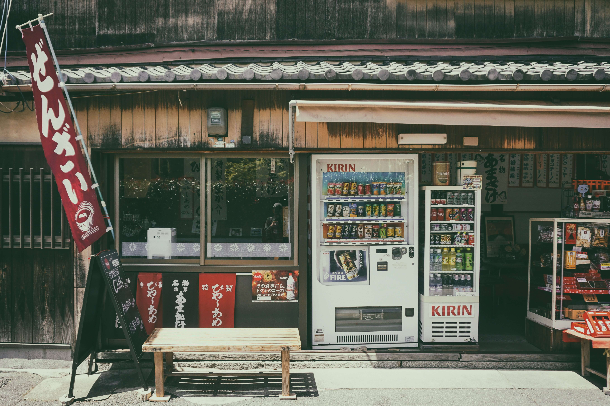
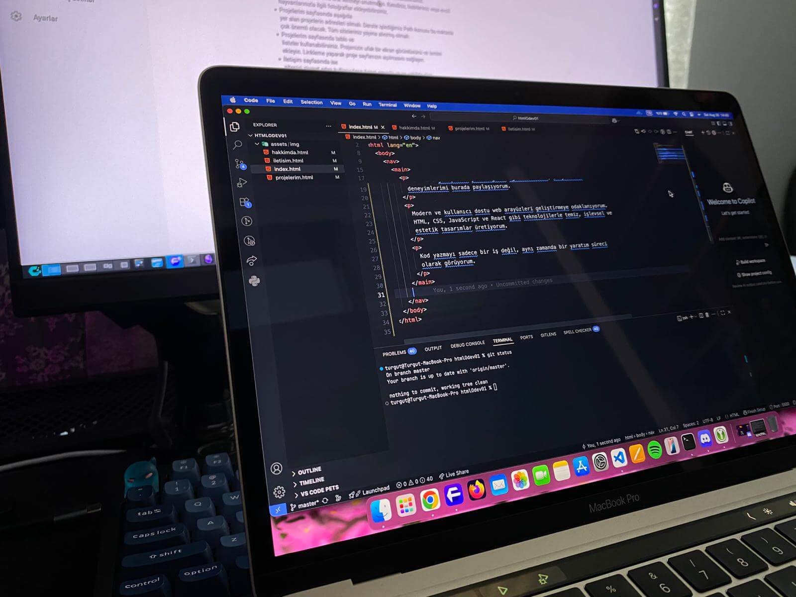
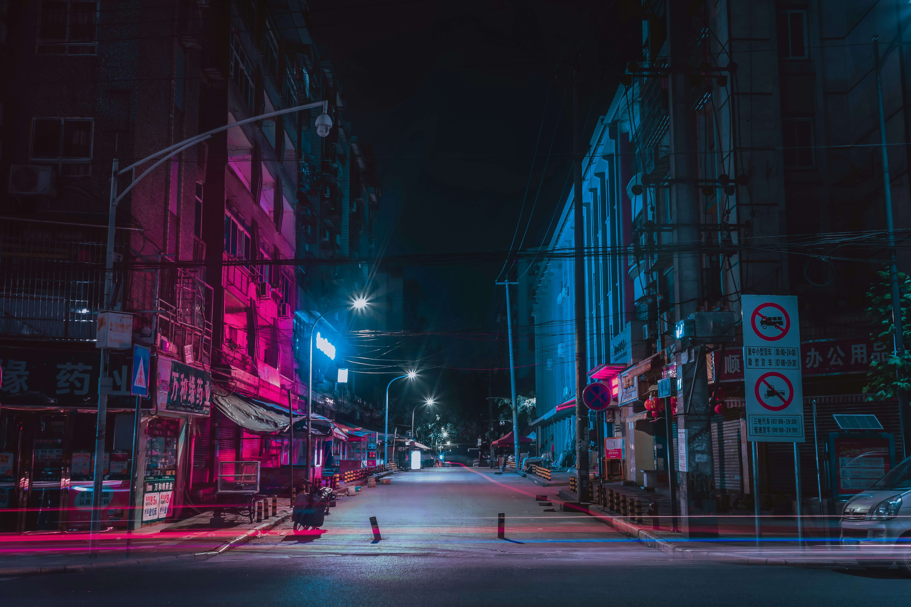

Merhaba, ben Turgut Can Taşkaya.
Front-End geliştirme yolculuğumda öğrendiklerimi, projelerimi ve deneyimlerimi burada paylaşıyorum.
Modern ve kullanıcı dostu web arayüzleri geliştirmeye odaklanıyorum. HTML, CSS, JavaScript ve React gibi teknolojilerle temiz, işlevsel ve estetik tasarımlar üretiyorum.
Kod yazmayı sadece bir iş değil, aynı zamanda bir yaratım süreci olarak görüyorum.


